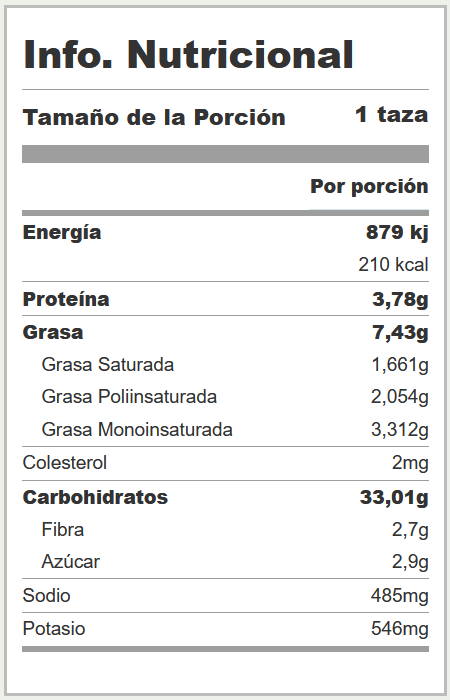

Pure de papas
Receta:
Ingredientes:
- 1 kg. de papas
- Manteca a gusto
- Nuez Moscada a gusto
- Sal a gusto
Paso a paso:
- Lavar las papas, si es de su gusto, pelarlas, sino, puede consumirlas con cáscaras.
- Hervir las papas.
- Pisar las papas con tenedor o pisapapas.
- Agregar a las papas mientras estan calientes, la manteca y la nuez moscada.
- Agregar sal a gusto y servir.
Informacion Nutricional:
